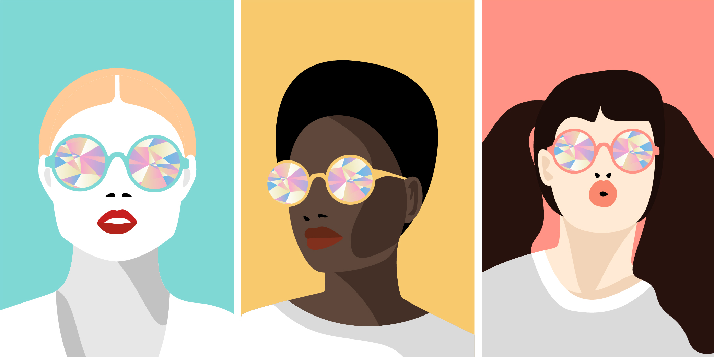

Overview.
With these compositions, I wanted to stretch my vector illustration skills by creating three different interpretations of women wearing bright, geometric spectacles. I wanted the colors to be bold and loud, but the silhouettes themselves to be clean and simple.
Made with Adobe Illustrator.
The design.
I matched the rims of each woman’s spectacles to her background color, so that it would blend more seamlessly and create a visual link between the two. I kept their clothing simple (white and gray) so it wouldn’t take away from the bright colors of the background and spectacles.
